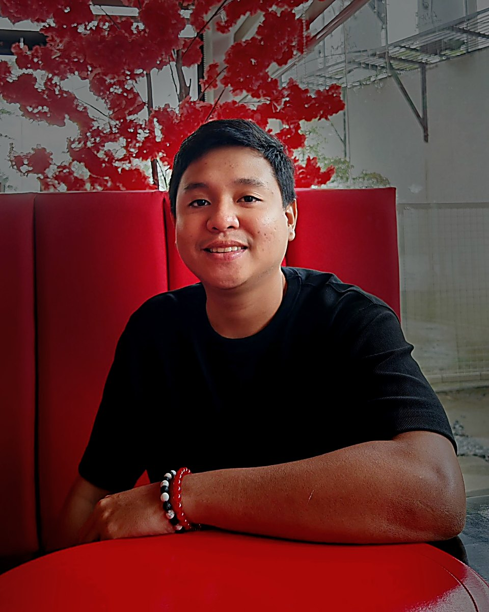

01
Database design & T-SQL
Schemas, stored procedures and reports built to hold up when someone checks the numbers.
Inquire nowI design SQL Server databases, build standalone desktop apps in C# WinForms, and build full web applications, from the first table to the deployed site.

01 · About
I work mostly in the database. I design schemas, write T-SQL and stored procedures, and build queries whose results have to hold up when someone checks them. That habit shapes how I write everything else.
I've built standalone desktop applications, including a point-of-sale system for a restobar and an endoscopy management system that prints patient imaging results. I also have hospital software experience with BizBox Inc., across hospital information, materials management, PhilHealth and financial management systems. Alongside that I build web systems of my own, each one starting with the schema and growing one working step at a time.
02 · Services
Schemas, stored procedures and reports built to hold up when someone checks the numbers.
Inquire nowStandalone C# WinForms apps for shops, clinics and offices, from point of sale to printed reports.
Inquire nowRole-based web apps on Node.js and SQL Server, built one working step at a time and deployed to Azure.
Inquire nowUsers, roles and permissions, storage clean-up including shrinking MDF and LDF files, and directory access.
Inquire now03 · Skills
Languages I code in
WinForms apps: POS, Endoscopy System, SMS Sender, Milagrosa Inventory
Stored procedures, reporting and every database behind my apps
Back ends for my four web apps
HEDSA and the Student Thesis Monitoring System, in NetBeans
Scripting and automation
Microsoft Access applications
Where I spend most days
Keeping systems running
Front to back
Getting it shipped
04 · Work
Featured web apps
A calendar-based system for booking driver transportation. Staff request rides, dispatchers and admins approve them with conflict checks, drivers are assigned by availability and update trip status from their own page. Includes reports with CSV export, in-app notifications and an audit log.
A hospital system built module by module on a local SQL Server database, starting at secure login and running through to patient admissions, with a modern web interface on top.
A web app that shows on a map which designated parking slots are free at malls, condos and restaurants, so a reserved spot stays with the person it belongs to. Sites, zones and slots are managed by admins, with QR codes per slot.
A social network for pets of every kind. Owners create pet profiles with photos and health records, post to a feed, connect with other pets, find pet-friendly places on a map, arrange playdates and message each other.
Desktop apps, experience and early work
Hands-on experience with hospital software across four product areas: the Hospital Information System, Materials Management System, PhilHealth Management System and Financial Management System.
A standalone point-of-sale application built for Calle Uno Restobar to handle its day-to-day sales.
A standalone application for endoscopy units that records patient imaging results and findings and prints them as reports.
A desktop application that sends text messages in bulk through a prepaid USB dongle with a SIM card. It reads all contact information from a CSV file. Coded entirely by hand in 2019, before AI-assisted development.
My thesis project: a desktop application that encrypts and decrypts any file, saving it with a file extension you choose. It is called hybrid because it uses a public key and a private key together, one to encrypt each file and its pair to decrypt it. It can process every file in a folder in one run and recognizes the keys stored inside each file, so only HEDSA can open what HEDSA has encrypted. Coded entirely by hand in 2018, before AI-assisted development.
My first client demo, built by hand with my collaborator Rz as our first project together. It tracked stock moving in and out with a full item inventory and produced printed reports. We were inexperienced and ran out of funding before it could launch, so we stepped away. It was a fun journey, and it taught me more than any project that went smoothly.
The first application I ever built, written in Java, my first programming language, using NetBeans. It tracks the progress of student theses.
No projects in this group yet.
05 · Process
We talk through what you need, who will use it and what data it has to handle.
I design the schema first, so the app sits on data that stays clean and fast.
You get a working version at every step to review, from the login page to the last report.
I deploy it locally or to Azure, with a setup guide and admin tools so your team can run it.
06 · Experience
Strategic Audit Solutions, Inc.Current
Designing SQL Server databases, writing T-SQL and stored procedures, administering databases and user access, and building web applications.
Metro Iloilo Hospital, Inc.
A six-month consultancy supporting the hospital's IT.
Metro Iloilo Hospital, Inc.
Led the hospital's IT department.
Metro Iloilo Hospital, Inc.
Supported the hospital's Hospital Information System (HIS) and the staff who rely on it every day.
West Visayas State University
Built HEDSA, my file encryption thesis, by hand in Java.
Tell me what you need. I usually reply within a day.
07 · Contact
Send me a note with what you're working on. I usually reply within a day.